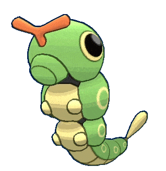
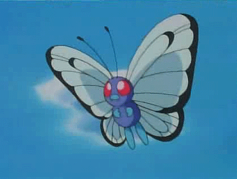

-
Bulbasaur #001

- Grama
- Veneno
Há uma semente de planta em suas costas desde o dia que este pokémon nasce. A semente cresce lentamente.
-
Ivysaur #002

- Grama
- Veneno
É um Pokémon anfíbio quadrúpede que tem a pele azul-esverdeada com manchas mais escuras. Sua flor em suas costas cresce conforme à intensidade da luz do sol absorvida. Como a flor cresce, ele perde a capacidade de ficar sobre as patas traseiras.
-
Venusaur #003

- Grama
- Veneno
É um Pokémon quadrúpede com pele verde acidentada, e azulada. Ele tem olhos pequenos e circulares vermelhos, dois dentes pontiagudos em sua mandíbula superior, e quatro dentes pontiagudos em sua mandíbula inferior. Tem três dedos com garras em cada pé.
-
Charmander #004

- Fogo
Charmander é um pequeno bípede, semelhante a um lagarto. A maioria de seu corpo é de cor laranja, enquanto a sua barriga é uma cor amarelo claro. Charmander, juntamente com todas as suas formas evoluídas, tem uma chama que está constantemente queimando sobre a extremidade da cauda.
-
Charmeleon #005

- Fogo
Charmeleon que é um pouco cruel. Uma natureza bárbara, nas batalhas, chicoteia seus oponentes com sua cauda de fogo e corta com garras afiadas, ele é um Pokémon super potente.
-
Charizard #006

- Fogo
Charizard é a forma evoluída de Charmeleon e a evolução final de Charmander.
-
Squirtle #007

- Água
Squirtle é um pequeno Pokémon, azul-claro com uma aparência semelhante ao de uma tartaruga. Como tartarugas, Squirtle tem um escudo que cobre seu corpo com orifícios que permitem que seus membros, cauda e cabeça para ser exposto. Ao contrário de uma tartaruga, Squirtle é normalmente bípede.
-
Wartortle #008

- Água
Wartortle são pequenos, bípede, tartaruga como Pokémon com uma aparência semelhante à da sua forma pré-evoluída, Squirtle. Algumas diferenças são que Wartortles desenvolveram garras e os dentes mais nítidas e maiores.
-
Blastoise #009

- Água
Blastoise é uma grande tartaruga com algumas características semelhantes de suas formas pré-evoluídas. Blastoise tem um grande corpo azul, barriga de cor creme e um grande escudo marrom aros de branco, com seus canhões de água. É agora visivelmente mais volumoso do que suas evoluções anteriores.
-
Caterpie #010
- Insetos
Caterpie é baseado em uma minhoca. Sua pele é verde, tem olhos amarelos com púpilas pretas, tem uma antena vermelha, tem uma "boca" verde, tem quatro pequenas patas amarelas, em seu corpo existem vários círculos amarelos e na ponta de sua calda tem uma espécie de chocalho.
-
Metapod #011

- Insetos
O escudo que cobre o corpo deste Pokémon é tão duro como uma laje de ferro. Metapod não se move muito. Ele ainda permanece assim porque está preparando suas entranhas macias para a evolução dentro da casca dura.
-
Butterfree #012
- Insetos
Butterfree tem a forma de uma borboleta. Seu corpo é roxo, tem olhos vermelhos e duas antenas pretas, sua boca é preta com dois dentes para fora, ele tem duas mãos pequenas azuis, seus pés são longos e azuis também, tem asas que são maiores que seu corpo e tem detalhes pretos.